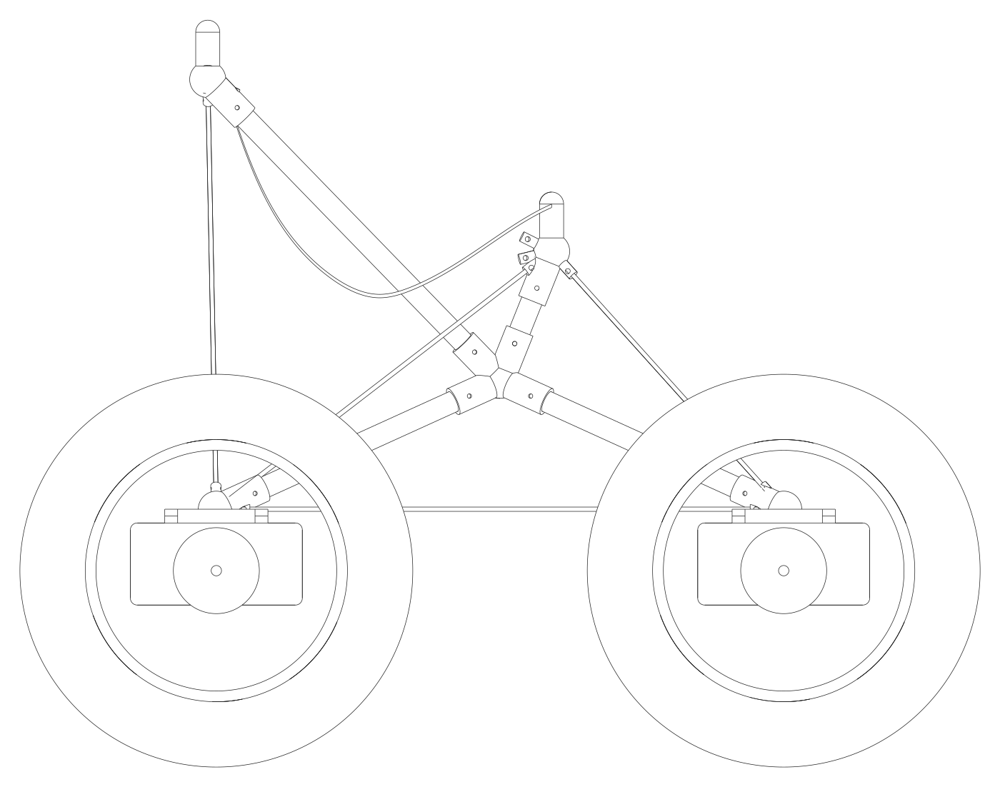
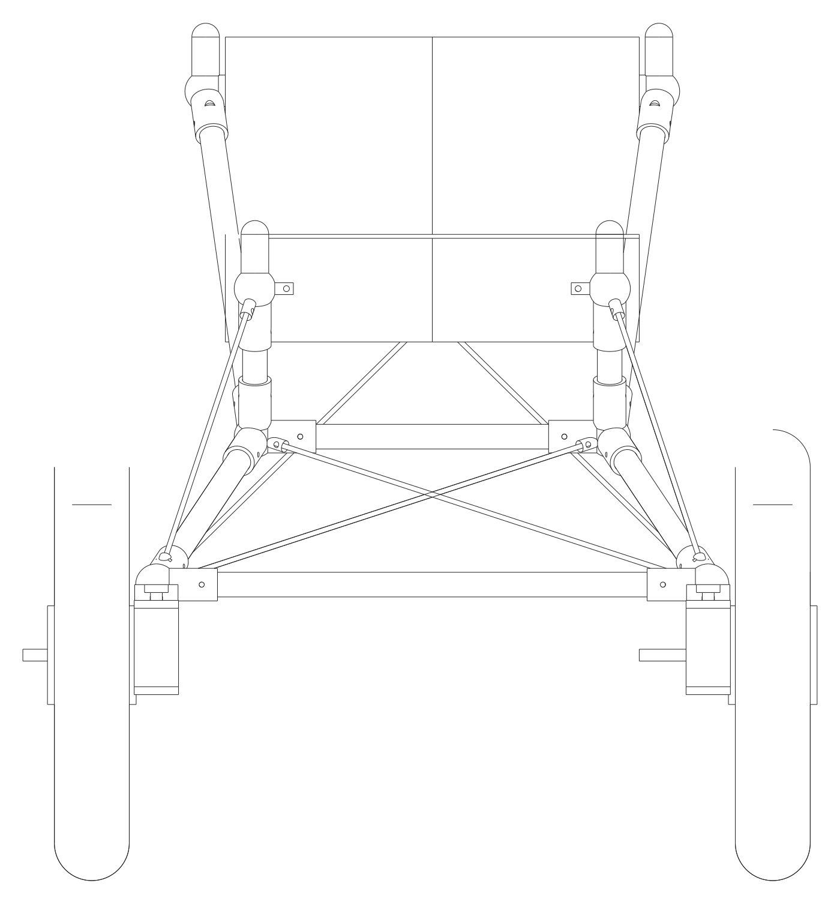
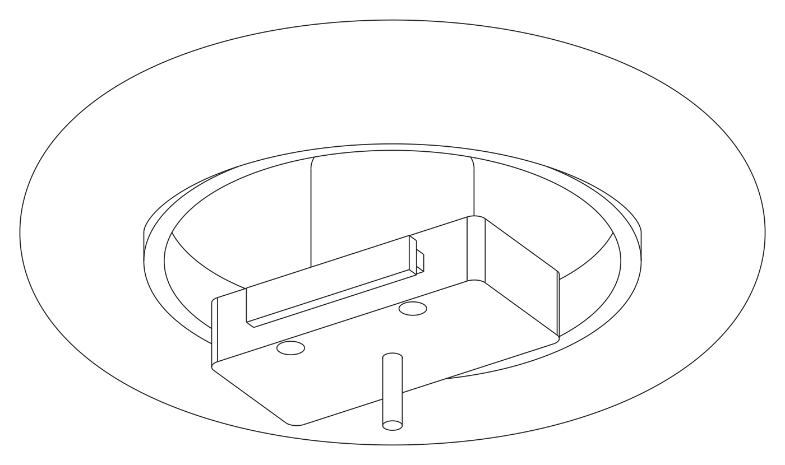
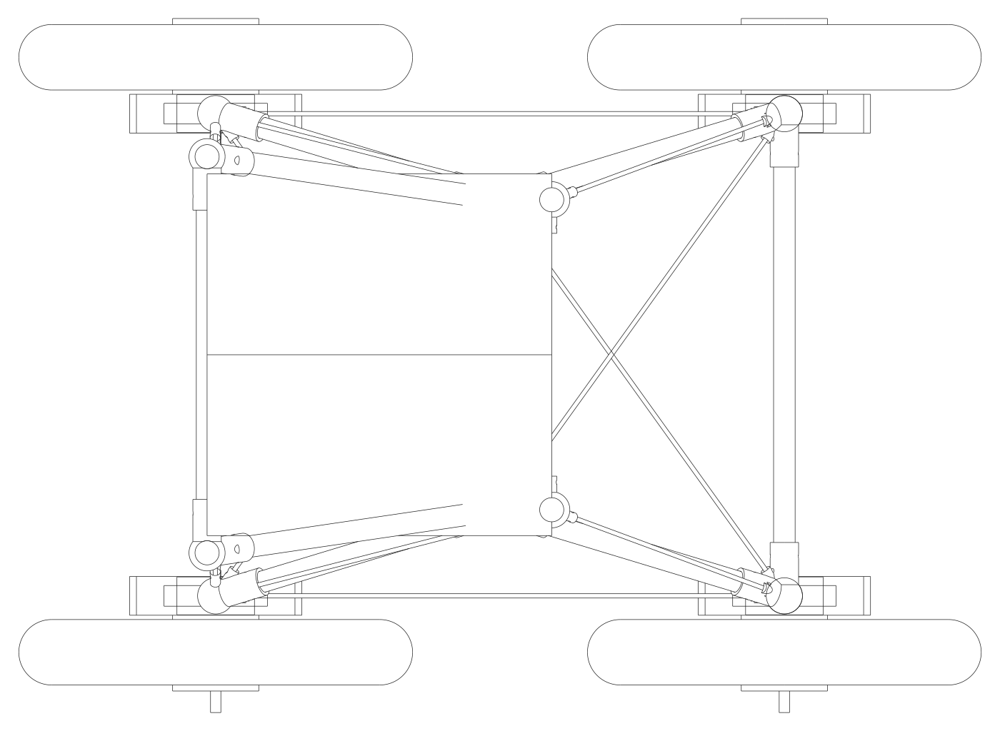

A camp chair on four identical, hot-swappable, self-powered wheel modules — packed into one piece of Burner Express luggage, rated to the rider's mass down to every tube, joint and cord, and repaired by a community fleet in under a minute.
Sources: github.com/outrightmental/PlayaSprawler · CERN-OHL-S / Apache-2.0 / CC-BY-SA · structured after BoardingFlow.
The Burner Express bus to Black Rock City allows two luggage items per ticket, each at most 62 linear inches and 50 lb.1 Everything else — wheel size, battery split, tube count, the fact that the seat is structural — falls out of that one bag.
Seated electric scooters and golf carts are disallowed personal transport in Black Rock City.3 A four-wheeled seated electric vehicle is permitted only as an Accessibility Vehicle — an electric wheelchair or 3–4-wheel mobility scooter for a rider with a documented need.4 On Ocean Beach the ADA "other power-driven mobility device" route is the only one.7
So the Sprawler is designed, limited and documented as a powered mobility device (ISO 7176 / EN 12184 reference tests6): 8 km/h cap, firmware turn-rate limiter, lights, and a rating record a rider can hand to an inspector.
Hard playa needs almost nothing (rolling resistance ≈ 0.02). Dry loose Ocean Beach sand needs ten times the drawbar and real flotation. The 16 × 3.0 tire lands at ~40 kPa ground pressure at the default class — excellent on playa, workable on dry sand at crawl speed — and only fits the bag section deflated. A 20 × 4.0 "PS-Sand" variant trades the one-bag pack for beach flotation.
From the sketch: one box — battery, motor, gearbox, brake, electronics — "4× redundant"; a chair frame like an REI camp chair with rods that stick into pockets on a canvas seat; two foot or hand controls; a signal bus; and a graph of nodes W W W W · B · C C · I 1…n · L 1…n.
| Node | Count | What it does |
|---|---|---|
| W wheel module | 4 | 16 × 3.0 tubeless on a mini geared hub motor; 7s1p pack ( Wh); FOC controller; Ethernet node; printed carrier with a T-rail dock. The wheel module is the battery. |
| C control module | 2 | Left and right "tread" inputs. Lever, pedal, joystick half, sip-puff — all publish the same normalised command. A rider missing a left leg and a right arm uses a left lever and a right pedal. |
| B bus node | 1 | Unmanaged Ethernet switch + supervisor + power distribution + charge input + e-stop. If it dies, everything stops: that is the safe state. |
| I / L | n | Inputs (horn, app) and loads (lights, sound) on the same two connectors as everything else. |
Dock — fore/aft-symmetric T-rail + one drop pin; plus DATA (M12 D-coded, 100BASE-TX) and POWER/ID (M12 A-coded, SELV bus + a resistor that tells the node which dock it is in). Traction current never crosses a dock.
PS-Bus — UDP multicast JSON, no broker, no master. ctrl/tread/left at 50 Hz is both the command and the heartbeat; a wheel stops ms after the last valid one.
Seat pockets — four Ø32 mm cups over domed pegs on the frame tips. The seat is the only part never swapped, the most decorated, and — because its side straps close the truss — a rated structural member.
Skid steer: left command drives both left wheels, right drives both right. No steering mechanism is what makes the four modules identical. docs/02


Every joiner is grown by cad/ps_cad.py from the node directions in analysis/ps_params.py: one socket boss per tube, one anchor rod per cord, a T-slot shoe on each dock, a domed peg on each seat tip. STEP and STL exports are in the repo.
analysis/run_all.pyA 3D pin-jointed, tension-only truss solver runs four load cases for each rating class: static, 2.5 g vertical (bump/drop), 1.0 g + 0.6 g lateral skid, and a 0.5 W backrest lean. The camp-chair backrest is a mechanism until the seat's side straps and the crossed backstays are counted — so they are, and they are rated.
Firmware rule |ω|·|v| ≤ g with ω = (vR − vL)/track. The wheels enforce it because skid steer allows yaw the geometry cannot survive.
Usable energy Wh over four packs. Rolling-resistance coefficients are assumptions (hard playa 0.02, soft/dusty 0.06, wet sand 0.05, dry loose sand 0.20) until the dyno test corrects them. Dry loose sand at 10 % grade exceeds rated torque: the firmware derates speed there.
Classes are payload masses: PS-100, PS-125, PS-150 kg (rider + gear). A part is rated by analysis with stated knock-downs and safety factors, then proof-loaded to 1.5 × static before it is marked. Firmware repeats the check: every node's hello carries its rating, and the vehicle drops to crawl if any live part is below the rider's class.
| Material | Basis | Knock-down | SF |
|---|---|---|---|
| CF tube 25 × 22 | 450 MPa ult., Euler with E = 80 GPa | — | 2.0 |
| Dyneema SK78 5 mm | MBL 18 kN | 0.5 (knots) | 3.0 |
| Seat edge + webbing | 6 kN pull test | — | 3.0 |
| Printed joiner (CF nylon/PET) | 80 MPa datasheet | 0.5 | 1.5 |
| Hub-motor axle | 785 MPa yield assumed | verify | 1.5 |
Label on every load-path part: PS-125 · JOINER-HUB-L · batch · maker · proof date as a QR code. docs/03

, Ø mm inflated / packed, mm wide, target kg.
Mini geared hub motor 250 / 500 W, 20 / 35 N·m, no-clutch variant for regen and hill-hold. Printed carrier with aluminium torque plates; single-sided axle clamp (see caveat 2). docs/04
One 25 mm rail clamp, the same two M12 connectors, one message: ctrl/tread/<side> {v: −1…1, seq} at 50 Hz. Return-to-centre, ≥ 5 % dead-band. The dock says CL or CR; the input form is the rider's business.
| Form | For |
|---|---|
| hand lever | most riders |
| foot rocker pedal | riders without the use of one hand |
| joystick half-axis ×2 | one-handed riders |
| sip-puff / switch pairs | as needed |
100BASE-TX on M12 D-coded through an 8-port unmanaged switch; separate M12 A-coded power/ID bus at pack voltage with 5 A eFuses per port. UDP multicast 239.77.83.1:7783, JSON, no broker.
| Topic | Rate |
|---|---|
ctrl/tread/left|right | 50 Hz |
wheel/<pos>/status | 10 Hz |
node/<serial>/hello (rating) | 1 Hz |
veh/mode · veh/estop | 10 Hz |
Rules: heartbeat by stream (200 ms), presence by status (250 ms), one node per dock, rating = min. "Do better than Ethernet" is reserved: 10BASE-T1S single-pair for v2. docs/06
for every member: 3 rails, 4 legs, 2 poles, 2 posts — 0.74 kg of tube. for the side, rear, X-brace, forestay, aftstay and crossed backstay cords. Printed joiners at ten nodes.
The seat: two layers of 1000D with 25 mm webbing side straps sewn full length, four corner cups. Decorate the face freely; never cut the straps or pockets. Flat pattern in seat/. docs/08

firmware/sim/psbus_sim.py, same rules, same timingsDrive with the two treads, then break things. The supervisor only ever publishes a mode; every wheel decides for itself, from the messages it can see, whether it is allowed to move.
mode run · vehicle rating PS-125 · rider class PS-125 · left control CL lever · right control CR pedal
Four modules stack axially (4 × = mm of the 640 mm bag); tires must be deflated to fit the 430 mm section; tubes shock-cord into segments ≤ mm; cords, seat, controls and bus node fill the ~32 L of corner voids. The mass margin is 0.8 %: a target, not a measurement.
Same rail, same two connectors, bus-bar behind. Any module docks to charge at ≤ 3 A; 32 modules overnight ≈ 2.7 kWh. Slots publish SoC on the camp LAN.
Stop → pull the pin → slide the module off the rail → slide the spare on → pin clicks → the node reads the dock and hellos with its rating → run, or crawl if the rating is low. Logged automatically.
Rider mass + gear → class. The steward assigns a vehicle rated at or above it and sets the rider class on the B node, which enforces it for the day. QR labels + hello logs answer "what was on that vehicle" in one query.
Lifecycle: new → proof-tested → in service → flagged → inspected → in service | retired. A flagged module never returns without an inspection entry. docs/11